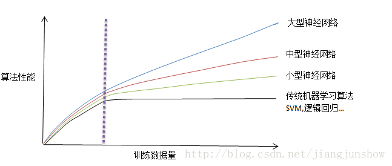

<!DOCTYPE html>
<html>
<head><meta name="generator" content="Hexo 3.8.0">
  <meta charset="utf-8">

  <!-- PACE Progress Bar START -->
  
    <script src="https://raw.githubusercontent.com/HubSpot/pace/v1.0.2/pace.min.js"></script>
    <link rel="stylesheet" href="https://github.com/HubSpot/pace/raw/master/themes/orange/pace-theme-flash.css">
  
  

  <!-- PACE Progress Bar START -->

  
  <title>人工智能初识 1.3：什么使深度学习火了 | Blog of Geowind</title>
  <meta name="viewport" content="width=device-width, initial-scale=1, maximum-scale=1">
  
  <meta name="keywords" content="人工智能深度学习">
  
  
  
  
  <meta name="description" content="算法，数据量，计算力">
<meta name="keywords" content="人工智能,深度学习">
<meta property="og:type" content="article">
<meta property="og:title" content="人工智能初识 1.3：什么使深度学习火了">
<meta property="og:url" content="http://geowind.org/GeowindBlog/archives/d08677b4.html">
<meta property="og:site_name" content="Blog of Geowind">
<meta property="og:description" content="算法，数据量，计算力">
<meta property="og:locale" content="default">
<meta property="og:image" content="http://geowind.org/GeowindBlog/assets/1_3_1.png">
<meta property="og:updated_time" content="2018-10-23T03:35:46.000Z">
<meta name="twitter:card" content="summary">
<meta name="twitter:title" content="人工智能初识 1.3：什么使深度学习火了">
<meta name="twitter:description" content="算法，数据量，计算力">
<meta name="twitter:image" content="http://geowind.org/GeowindBlog/assets/1_3_1.png">
  
    <link rel="alternate" href="/atom.xml" title="Blog of Geowind" type="application/atom+xml">
  
  <link rel="icon" href="/GeowindBlog/css/images/favicon.ico">
  
    <link href="//fonts.googleapis.com/css?family=Source+Code+Pro" rel="stylesheet" type="text/css">
  
  <link href="https://fonts.googleapis.com/css?family=Open+Sans|Montserrat:700" rel="stylesheet" type="text/css">
  <link href="https://fonts.googleapis.com/css?family=Roboto:400,300,300italic,400italic" rel="stylesheet" type="text/css">
  <link href="https://cdn.bootcss.com/font-awesome/4.6.3/css/font-awesome.min.css" rel="stylesheet">
  <style type="text/css">
    @font-face{font-family:futura-pt;src:url(https://use.typekit.net/af/9749f0/00000000000000000001008f/27/l?subset_id=2&fvd=n5) format("woff2");font-weight:500;font-style:normal;}
    @font-face{font-family:futura-pt;src:url(https://use.typekit.net/af/90cf9f/000000000000000000010091/27/l?subset_id=2&fvd=n7) format("woff2");font-weight:500;font-style:normal;}
    @font-face{font-family:futura-pt;src:url(https://use.typekit.net/af/8a5494/000000000000000000013365/27/l?subset_id=2&fvd=n4) format("woff2");font-weight:lighter;font-style:normal;}
    @font-face{font-family:futura-pt;src:url(https://use.typekit.net/af/d337d8/000000000000000000010095/27/l?subset_id=2&fvd=i4) format("woff2");font-weight:400;font-style:italic;}</style>
    
  <link rel="stylesheet" id="athemes-headings-fonts-css" href="//fonts.googleapis.com/css?family=Yanone+Kaffeesatz%3A200%2C300%2C400%2C700&amp;ver=4.6.1" type="text/css" media="all">
  <link rel="stylesheet" href="/GeowindBlog/css/style.css">

  <script src="https://code.jquery.com/jquery-3.1.1.min.js"></script>

  <!-- Bootstrap core CSS -->
  <link rel="stylesheet" href="https://netdna.bootstrapcdn.com/bootstrap/3.0.2/css/bootstrap.min.css">
  <link rel="stylesheet" href="/GeowindBlog/css/hiero.css">
  <link rel="stylesheet" href="/GeowindBlog/css/glyphs.css">
  

  <!-- Custom CSS -->
  <link rel="stylesheet" href="/GeowindBlog/css/my.css">
  <!-- Google Adsense -->
  
</head>
</html>
<script>
var themeMenus = {};

  themeMenus["/GeowindBlog/"] = "Home"; 

  themeMenus["/GeowindBlog/archives/"] = "Archives"; 

  themeMenus["/GeowindBlog/categories/"] = "Categories"; 

  themeMenus["/GeowindBlog/tags/"] = "Tags"; 

  themeMenus["/GeowindBlog/about/"] = "About"; 

</script>


  <body data-spy="scroll" data-target="#toc" data-offset="50">


  <header id="allheader" class="site-header" role="banner">
  <div class="clearfix container">
      <div class="site-branding">

          <h1 class="site-title">
            
              <a href="/GeowindBlog/" rel="home">
                
              </a>
            
          </h1>

          
            <div class="site-description">Everyone can make a difference , Geowind Here</div>
          
            
          <nav id="main-navigation" class="main-navigation" role="navigation">
            <a class="nav-open">Menu</a>
            <a class="nav-close">Close</a>
            <div class="clearfix sf-menu">

              <ul id="main-nav" class="nmenu sf-js-enabled">
                    
                      <li class="menu-item menu-item-type-custom menu-item-object-custom menu-item-home menu-item-1663"> <a class="" href="/GeowindBlog/">Home</a> </li>
                    
                      <li class="menu-item menu-item-type-custom menu-item-object-custom menu-item-home menu-item-1663"> <a class="" href="/GeowindBlog/archives/">Archives</a> </li>
                    
                      <li class="menu-item menu-item-type-custom menu-item-object-custom menu-item-home menu-item-1663"> <a class="" href="/GeowindBlog/categories/">Categories</a> </li>
                    
                      <li class="menu-item menu-item-type-custom menu-item-object-custom menu-item-home menu-item-1663"> <a class="" href="/GeowindBlog/tags/">Tags</a> </li>
                    
                      <li class="menu-item menu-item-type-custom menu-item-object-custom menu-item-home menu-item-1663"> <a class="" href="/GeowindBlog/about/">About</a> </li>
                    
              </ul>
            </div>
          </nav>


      </div>
  </div>
</header>


  <div id="container">
    <div id="wrap">
            
      <div id="content" class="outer">
        
          <section id="main" style="float:none;"><article id="post-人工智能初识 1.3：什么使深度学习火了" style="width: 66%; float:left;" class="article article-type-post" itemscope="" itemprop="blogPost">
  <div id="articleInner" class="clearfix post-1016 post type-post status-publish format-standard has-post-thumbnail hentry category-template-2 category-uncategorized tag-codex tag-edge-case tag-featured-image tag-image tag-template">
    
    
      <header class="article-header">
        
  
    <h1 class="thumb" itemprop="name">
      人工智能初识 1.3：什么使深度学习火了
    </h1>
  

      </header>
    
    <div class="article-meta">
      
	Posted on <a href="/GeowindBlog/archives/d08677b4.html" class="article-date">
	  <time datetime="2018-10-23T03:35:46.000Z" itemprop="datePublished">October 23, 2018</time>
	</a>

      
	<span id="busuanzi_container_page_pv">
	  本文总阅读量<span id="busuanzi_value_page_pv"></span>次
	</span>

    </div>
    <div class="article-entry" itemprop="articleBody">
      
        <p>算法，数据量，计算力<br><a id="more"></a></p>
<h1 id="人工智能初识（一）：什么使深度学习火了"><a href="#人工智能初识（一）：什么使深度学习火了" class="headerlink" title="人工智能初识（一）：什么使深度学习火了"></a>人工智能初识（一）：什么使深度学习火了</h1><hr>
<blockquote>
<p>原文转载：<a href="https://blog.csdn.net/jiangjunshow/article/details/77451454" target="_blank" rel="noopener">https://blog.csdn.net/jiangjunshow/article/details/77451454</a></p>
</blockquote>
<p>深度学习这个技术其实几十年前就已经存在了。但为什么直到近几年才火起来了? 在这篇文章中，让我们来看看使深度学习火起来的一些因素。<br></p>
<h2 id="算法"><a href="#算法" class="headerlink" title="算法"></a>算法</h2><p>上图横轴代表训练数据的数量，纵轴代表算法性能（如广告点击预测的准确性）。从图中可以看出，当我们给出越多的训练数据时，各种算法的性能都会越高。但是各个算法之间有所区别。对于传统的机器学习算法（黑色的曲线），最开始它的性能也在提升，但是后来，无论你再怎么添加训练数据它的性能都不再提升了。再多的数据也是浪费。而对于小型神经网络，它的性能是会随着数据量不断提升的，但是提升的幅度不大，中型网络幅度要大些，大型网络幅度就更大些…</p>
<h2 id="数据量"><a href="#数据量" class="headerlink" title="数据量"></a>数据量</h2><p>之前我们一直因为没有足够量的数据而无法提升神经网络的性能。但后来我们进入了电子社会，摄像头、电脑、手机越来越便宜，同时人们花费了大量时间在电脑在网页在手机上面，以及后来出现的物联网，各种穿戴设备各种传感器产生了越来越多的数据。这使得神经网络得以大展拳脚。<br>需要注意的是，上图指的训练数据是带标签的数据，即有x，y标签的。现在的神经网络不是所有的数据都认识，它只认识那些带标签的数据（可训练的样本）。因为当前有所作为的都还只是监督学习型的神经网络。</p>
<p>从上图还可以看出，如果你想达到非常高的性能水平，那么你需要两样东西。首先，你需要足够大的神经网络，其次你需要很多训练数据。所以我们经常说“规模一直在推动着深度学习的进步”。这里的规模，是指神经网络的大小以及训练数据的数量。但是规模始终是有尽头的，因为最终你耗尽了数据，或者最终你的网络太大了，以至于需要很长时间才能训练完。但仅仅是为了提升规模，在深度学习的世界里，我们都已经走了很长的路了，这一路来随着规模的提升神经网络的性能也在同步提升着。</p>
<p>从图中还可以看出，紫色虚线左边的区域（训练数据量很小的区域）中，各种不同算法的性能其实分不出高下。也就是说，在可训练的数据集很小的情况下，极有可能某人实现的传统的机器学习算法会比你的大型神经网络的性能还高。</p>
<h2 id="计算力"><a href="#计算力" class="headerlink" title="计算力"></a>计算力</h2><p>在早些年，深度学习领域的进步主要靠不断增长的训练数据量以及不断增长的计算力（CPU和GPU的发展）。 但在过去的几年里我们开始看到了巨大的算法创新。当然其中很多算法创新都只是为了让神经网络运行得更快（相当于提升计算力）。例如，一个巨大的突破就是用relu函数代替了sigmoid函数。当然现在你还不需要了解它们的细节。在这里简单和大家说一下，在sigmoid函数的某些区域的斜率几乎为零，所以使学习变得很慢，而relu函数的斜率一直都很大（你回顾一下前面文章中我画的relu函数的图就可以很直观的明白了，这个函数的图是一个很陡的直线，所以斜率很大）。这些新的算法大大缩短了神经网络的训练周期，让我们可以训练更大的神经网络、利用上更多的训练数据。<br>强大计算力很重要的另一个原因是，它可以让你更快的验证自己的想法，以便不断试错，以得到更好的想法。例如，你有一个神经网络架构的想法，你用代码实现了你的想法，然后运行它，进行训练，然后通过观察它，分析运行结果，然后你再修改自己的想法细节，然后再运行再观察再修改…。</p>

      
    </div>
    <footer class="entry-meta entry-footer">
      
	<span class="ico-folder"></span>
    <a class="article-category-link" href="/GeowindBlog/categories/人工智能初识/">人工智能初识</a>, <a class="article-category-link" href="/GeowindBlog/categories/人工智能初识/（一）/">（一）</a>

      
  <span class="ico-tags"></span>
  <ul class="article-tag-list"><li class="article-tag-list-item"><a class="article-tag-list-link" href="/GeowindBlog/tags/人工智能/">人工智能</a></li><li class="article-tag-list-item"><a class="article-tag-list-link" href="/GeowindBlog/tags/深度学习/">深度学习</a></li></ul>

      
            
      
        
	<div id="comment">
		<!-- 来必力City版安装代码 -->
		<div id="lv-container" data-id="city" data-uid="MTAyMC8yOTQ4MS82MDQ5">
		<script type="text/javascript">
		   (function(d, s) {
		       var j, e = d.getElementsByTagName(s)[0];

		       if (typeof LivereTower === 'function') { return; }

		       j = d.createElement(s);
		       j.src = 'https://cdn-city.livere.com/js/embed.dist.js';
		       j.async = true;

		       e.parentNode.insertBefore(j, e);
		   })(document, 'script');
		</script>
		<noscript>为正常使用来必力评论功能请激活JavaScript</noscript>
		</div>
		<!-- City版安装代码已完成 -->
	</div>


      
    </footer>
  </div>
  
    
<nav id="article-nav">
  
    <a href="/GeowindBlog/archives/8c3e5841.html" id="article-nav-newer" class="article-nav-link-wrap">
      <strong class="article-nav-caption">Newer</strong>
      <div class="article-nav-title">
        
          人工智能初识 2.1：如何将数据输入到神经网络中
        
      </div>
    </a>
  
  
    <a href="/GeowindBlog/archives/af99dac3.html" id="article-nav-older" class="article-nav-link-wrap">
      <strong class="article-nav-caption">Older</strong>
      <div class="article-nav-title">人工智能初识 1.2：监督学习型神经网络</div>
    </a>
  
</nav>

  
</article>

<!-- Table of Contents -->

  <aside id="sidebar">
    <div id="toc" class="toc-article">
    <strong class="toc-title">Contents</strong>
    
      <ol class="nav"><li class="nav-item nav-level-1"><a class="nav-link" href="#人工智能初识（一）：什么使深度学习火了"><span class="nav-number">1.</span> <span class="nav-text">人工智能初识（一）：什么使深度学习火了</span></a><ol class="nav-child"><li class="nav-item nav-level-2"><a class="nav-link" href="#算法"><span class="nav-number">1.1.</span> <span class="nav-text">算法</span></a></li><li class="nav-item nav-level-2"><a class="nav-link" href="#数据量"><span class="nav-number">1.2.</span> <span class="nav-text">数据量</span></a></li><li class="nav-item nav-level-2"><a class="nav-link" href="#计算力"><span class="nav-number">1.3.</span> <span class="nav-text">计算力</span></a></li></ol></li></ol>
    
    </div>
  </aside>
</section>
        
      </div>
      <footer id="footer" class="site-footer">
  

  <div class="clearfix container">
      <div class="site-info">
	      &copy; 2018 Blog of Geowind All Rights Reserved.
          
            <span id="busuanzi_container_site_uv">
              本站访客数<span id="busuanzi_value_site_uv"></span>人次  
              本站总访问量<span id="busuanzi_value_site_pv"></span>次
            </span>
          
      </div>
      <div class="site-credit">
        Theme by <a href="https://github.com/iTimeTraveler/hexo-theme-hiero" target="_blank">hiero</a>
      </div>
  </div>
</footer>


<!-- min height -->

<script>
    var contentdiv = document.getElementById("content");

    contentdiv.style.minHeight = document.body.offsetHeight - document.getElementById("allheader").offsetHeight - document.getElementById("footer").offsetHeight + "px";
</script>

<!-- Custome JS -->
<script src="/GeowindBlog/js/my.js"></script>
    </div>
    <!-- <nav id="mobile-nav">
  
    <a href="/GeowindBlog/" class="mobile-nav-link">Home</a>
  
    <a href="/GeowindBlog/archives/" class="mobile-nav-link">Archives</a>
  
    <a href="/GeowindBlog/categories/" class="mobile-nav-link">Categories</a>
  
    <a href="/GeowindBlog/tags/" class="mobile-nav-link">Tags</a>
  
    <a href="/GeowindBlog/about/" class="mobile-nav-link">About</a>
  
</nav> -->
    

<!-- mathjax config similar to math.stackexchange -->

<script type="text/x-mathjax-config">
  MathJax.Hub.Config({
    tex2jax: {
      inlineMath: [ ['$','$'], ["\\(","\\)"] ],
      processEscapes: true
    }
  });
</script>

<script type="text/x-mathjax-config">
    MathJax.Hub.Config({
      tex2jax: {
        skipTags: ['script', 'noscript', 'style', 'textarea', 'pre', 'code']
      }
    });
</script>

<script type="text/x-mathjax-config">
    MathJax.Hub.Queue(function() {
        var all = MathJax.Hub.getAllJax(), i;
        for(i=0; i < all.length; i += 1) {
            all[i].SourceElement().parentNode.className += ' has-jax';
        }
    });
</script>

<script type="text/javascript" src="https://cdnjs.cloudflare.com/ajax/libs/mathjax/2.7.4/MathJax.js?config=TeX-AMS-MML_HTMLorMML">
</script>


  <link rel="stylesheet" href="https://cdnjs.cloudflare.com/ajax/libs/fancybox/2.1.5/jquery.fancybox.min.css">
  <script src="https://cdnjs.cloudflare.com/ajax/libs/fancybox/2.1.5/jquery.fancybox.min.js"></script>


<script src="/GeowindBlog/js/scripts.js"></script>
<script src="https://stackpath.bootstrapcdn.com/bootstrap/3.3.7/js/bootstrap.min.js"></script>
<script src="/GeowindBlog/js/main.js"></script>


  <div style="display: none;">
    <script src="https://s95.cnzz.com/z_stat.php?id=1260716016&web_id=1260716016" language="JavaScript"></script>
  </div>


	<script async src="https://dnqof95d40fo6.cloudfront.net/atw7f8.js">
	</script>


  </div>

  <a id="rocket" href="#top" class=""></a>
  <script type="text/javascript" src="/js/totop.js" async=""></script>
</body>
</html>
